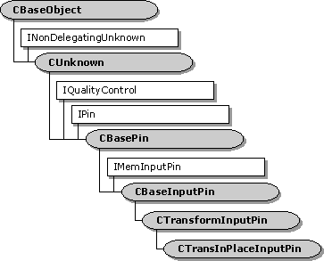

description: The CTransInPlaceInputPin class implements an input pin that is used by the CTransInPlaceFilter class. ms.assetid: 8cd2f17d-64b4-4ee6-b31a-e841ada03ce6 title: CTransInPlaceInputPin class (Transip.h) ms.topic: reference ms.date: 4/26/2023 topic_type:
[The feature associated with this page, DirectShow, is a legacy feature. It has been superseded by MediaPlayer, IMFMediaEngine, and Audio/Video Capture in Media Foundation. Those features have been optimized for Windows 10 and Windows 11. Microsoft strongly recommends that new code use MediaPlayer, IMFMediaEngine and Audio/Video Capture in Media Foundation instead of DirectShow, when possible. Microsoft suggests that existing code that uses the legacy APIs be rewritten to use the new APIs if possible.]

The CTransInPlaceInputPin class implements an input pin that is used by the CTransInPlaceFilter class.
Typically, you do not need to derive from this class. If you do, you must override the filter's CTransInPlaceFilter::GetPin method to create instances of your derived class.
| Protected Member Variables | Description |
|---|---|
| m_bReadOnly | Flag that specifies whether the input stream is read-only. |
| m_pTIPFilter | Pointer to the filter that created this pin. |
| Public Methods | Description |
| CTransInPlaceInputPin | Constructor method. |
| CheckMediaType | Determines if the pin accepts a specific media type. |
| PeekAllocator | Retrieves a pointer to the pin's allocator. |
| ReadOnly | Indicates whether the input stream is read-only. |
| IPin Methods | Description |
| EnumMediaTypes | Enumerates the pin's preferred media types. |
| IMemInputPin Methods | Description |
| GetAllocator | Retrieves the memory allocator proposed by this pin. |
| NotifyAllocator | Specifies an allocator for the connection. |
| GetAllocatorRequirements | Retrieves the allocator properties requested by the pin. |
| Requirement | Value |
|---|---|
| Header | Transip.h (include Streams.h) |
| Library | Strmbase.lib (retail builds); Strmbasd.lib (debug builds) |